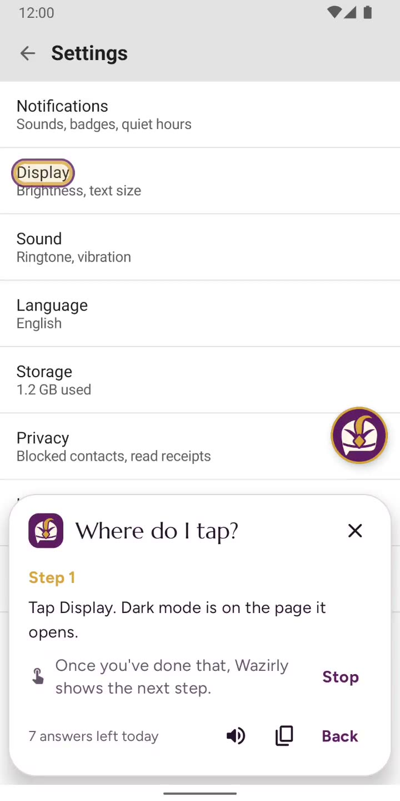
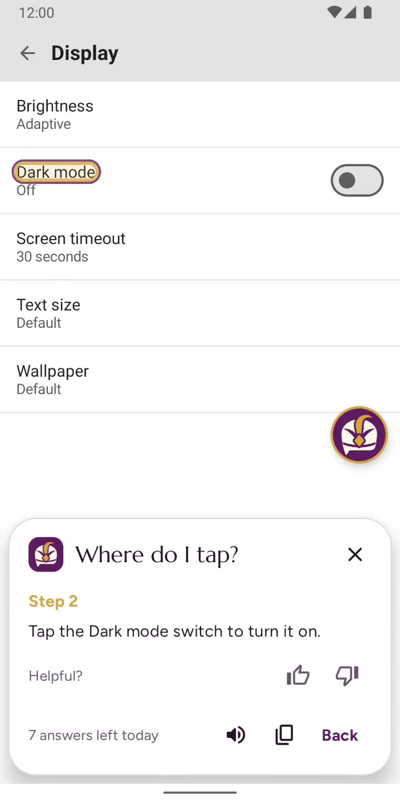
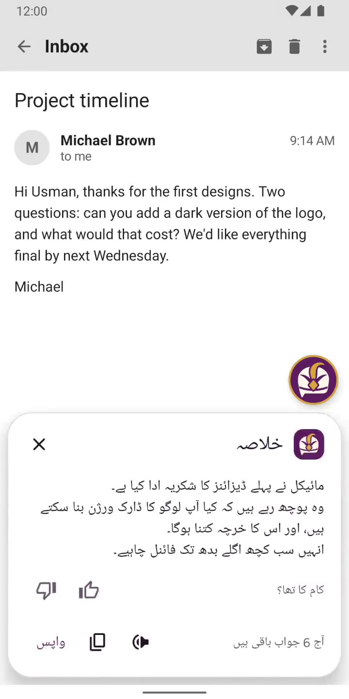
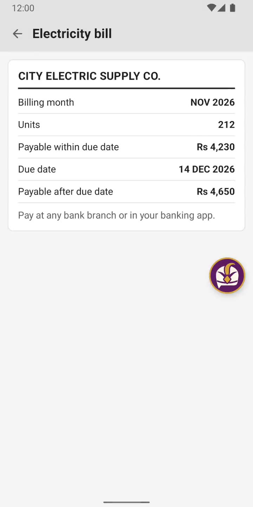

Early access on Google Play
A help button for your whole phone.
Wazirly is an AI assistant for your Android phone that floats over every app. Tap it, and it reads what's on your screen, then tells you in plain words whether that message is a scam, what to reply, or where to tap next.
- Free to start
- No card, no account to begin
- Any Android phone from the last few years
Works over WhatsApp, Messages, Gmail, Facebook, Instagram, Marketplace, Telegram, Messenger, Outlook, Chrome, eBay, Amazon, TikTok, your bank's app, and everything else on your phone.
01 · Why now
Phones keep getting harder. Scams keep getting better.
Scam texts look real, apps move their buttons, and long letters hide the one line that matters. Most of us end up guessing, or asking someone, again.
lost to fraud reported by Americans in 2025, a record. Text messages were the most common way in.
Source: US Federal Trade Commission
lost in the UK in 2025 to scams that trick people into sending the money themselves.
UK adults helped someone else get something done online last year, most often a parent.
Source: UK Department for Science, Innovation and Technology, 2026
In Canada, people reported a record C$704 million lost to fraud in 2025 (Canadian Anti-Fraud Centre), and in Australia A$2.18 billion (National Anti-Scam Centre).
02 · Try it right here
Tap the button. See what happens.
This is how Wazirly works on a real phone. Pick a situation, then tap the Wazirly button on the screen.
- 1Tap the Wazirly button on the screen
- 2Wazirly reads what's on the screen
- 3Pick what you need
- 4Get the answer, in plain words
Strong warning signs
Classic "sent by mistake, please send it back" trick: the money that came in is usually fake, or taken back later.
Pressure and a sad story (children's school fees) are there to rush you. It comes from an unknown number.
Don't send any money. Check your balance in your bank's own app, not through this message, and report the text.
This is a guide, not a guarantee.
Chat · Ahmed. He's asking if you'll come for dinner with your mum; say yes or no, warmly.
Tap one to copy it, then paste it in the chat.
What do you want to do?
Step 1
Tap Display. Dark mode is on the page it opens.
Once you've done that, Wazirly shows the next step.
9 answers left today
Tap the Wazirly button on the phone
03 · What it does
One AI assistant, over every app on your phone.
A scam checker, a reply writer, a step-by-step guide, a summariser and a translator in one button. No copying, no screenshots, no switching apps. These are real screens from the app.






-
01Scam check for texts, emails and posts
Wazirly reads the text, email or post on your screen and tells you how risky it looks, the warning signs it found, and what to do next. It works where spam filters stop: WhatsApp, Messages, email, social apps.
- Plain words: strong warning signs, some, or none it can see
- The exact phrases that gave it away, like "sent by mistake" or "your account is locked"
- One clear next step: don't pay, check with your bank, block, report
-
02Suggest a reply: an AI reply writer for any chat
Wazirly reads the chat, works out what's being asked, and writes three different replies: yes, no, or something in between. Copy the one you like and paste it in.
- Make it shorter, warmer or more formal with one tap
- Tell it your point in a few words, and it writes the message
- Follows the chat you're in: family, friends, work or a seller
-
03Where do I tap? Step-by-step help in any app
"Turn on dark mode", "cancel my subscription", "find my order". Wazirly puts a ring around the next thing to tap, then follows you to the next screen until it's done.
- Type it or just say it
- You stay in control: Wazirly shows the way and never taps for you
- Lost? It notices and helps you back on track
-
04Summary: long emails, chats and bills, in short
A long email, a busy group chat, a confusing bill: the key points first, with the deadline and the amount.
-
05Translate what's on your screen
Read what's on your screen in your language, without leaving the app you're in. Then reply in good English.
-
06Ask anything about the screen, or a picture
"What does this mean?" "Is this the right form?" Ask about what's on the screen, or have it describe the pictures.
04 · How it works
Set it up once. Help is one tap away in every app.
Three steps, and the button stays with you.
Turn on Wazirly
Install it from Google Play and tap Start. Android asks you to let Wazirly show its button over your apps and see your screen when you tap it.
Tap the button on any screen
It floats at the edge of your screen. Move it wherever you like, or hold it to speak.
Pick what you need
Scam check, a reply, where to tap, a summary. The answer comes in seconds, in plain words.
05 · For the family tech support
A phone assistant for parents, grandparents, and anyone who calls you for help.
"Is this text from the bank real?" "How do I send a photo?" "Where's the button gone?"
If you're the one everyone calls for phone help, put Wazirly on their phone and turn it on together. They get a calm second opinion on every suspicious message and patient, step-by-step help, any time of day, without waiting for you to pick up.
- Your parcel could not be delivered. Pay the £1.99 redelivery fee within 24 hours: royal-mail-parcel.co
- Is this real?
- Scam check · Strong warning signsRoyal Mail never asks for a redelivery fee by text, and that web address isn't theirs. Don't pay. Delete the message, and check any parcel in the Royal Mail app.
06 · Private by design
Your screen is yours. Wazirly reads as little as it can, only when you ask.
Only when you tap
Wazirly reads your screen only when you tap its button, after Android's own permission prompt. It never watches in the background.
Pictures only with your OK
Most answers use just the words on your screen. When a picture would help, Wazirly asks first.
Never sold, no ads, no training
Your requests aren't sold or used for ads, and the AI provider isn't allowed to train its models on them.
Delete it any time
One tap in the app deletes your data. You don't need an account to use Wazirly.
Android hides Wazirly in your phone's own Settings and on some banking and password screens, to keep you safe. The full details are in the privacy policy.
07 · Prices
Start free. Upgrade when you need more.
Every feature is in the free plan. Premium is for people who use Wazirly all day.
Free
Free, no card needed
- 10 answers a day
- Up to 3 of them can look at pictures on your screen
- Scam check, replies, where to tap, summary, translate and more
Premium
Monthly or yearly, through Google Play
- 50 answers a day
- Up to 10 of them can look at pictures on your screen
- Answers can search the web for current facts and an app's real menus
Early-access bonus: while Wazirly is in testing, testers get Premium free.
Join the waitlist
Be first when Wazirly reaches your phone.
Wazirly is in early access on Google Play. Leave your email and we'll send you the link that gets you in, or tell you the moment it's ready for your phone.
- Early access to the Android app, with Premium free while it's in testing
- On iPhone? Tell us. iPhone doesn't let apps help over other apps yet, and you'll be first to hear when Wazirly works there
- One or two emails, no spam, unsubscribe any time
Already a tester? Get Wazirly on Google Play
Questions
Good to know before you join
An Android app that puts a small button over every app on your phone. When you're stuck, tap it: Wazirly reads what's on your screen and helps with what's in front of you, from a suspicious text to a reply you don't know how to write.
Yes. The free plan gives you 10 answers a day with every feature, and no card is needed. Premium gives you 50 a day and answers that can search the web. While Wazirly is in testing, testers get Premium free.
Android phones with Android 8.0 or newer, which is nearly every Android phone in use today, not just the latest models. It isn't on iPhone yet, because iPhone doesn't let apps show a button over other apps. Join the waitlist and choose iPhone to hear first if that changes.
In almost every app: chats, texts, email, social media, shopping, government and health sites. For your safety, Android hides it in your phone's own Settings app and on some banking and password screens.
Only the screen you're on, and only when you tap its button. To write the answer, the words on that screen go to Wazirly's server and an AI model. They aren't sold, used for ads, or used to train AI. Pictures are sent only if you agree. The privacy policy has every detail.
No checker is. Wazirly tells you the warning signs it can see and what to do, as a second opinion. If you're unsure, don't pay or share codes, and check with your bank or the company using a number you already trust.
Wazirly's screens and answers come in English, Urdu and Roman Urdu. It can read and translate what's on your screen in many more.
Join the waitlist above. We'll email you the link to join the Wazirly testers group; join it, accept the Google Play early-access test, and install Wazirly from Google Play like any other app.
Sharkstack Developments, a small independent studio founded by Shibbal Farooq, who builds Wazirly and answers every email at info@sharkstack.dev. The About page says more, and the privacy policy says exactly what the app reads and keeps.
An on-screen one. Chat assistants like ChatGPT or Gemini live in their own app, so you have to copy a message or describe a screen to them. Wazirly sits over the app you're already in, reads the screen when you tap its button, and answers about what's in front of you: the text, the chat, the form, the setting. It's an AI phone assistant built for Android, in English, Urdu and Roman Urdu.
Yes. Open the message, tap the Wazirly button and choose Scam check. It reads the text, email or post on your screen and tells you how risky it looks, the warning signs it found (a fake parcel fee, "sent by mistake", "your account is locked"), and what to do next. It works in WhatsApp, Messages, email and social apps, where spam filters stop.
It was built for them. Big plain-words answers, one button that stays in the same place, a scam check before they tap anything, and step-by-step "where do I tap" help that rings the next button. Set it up once on their phone, and they get a calm second opinion any time of day, without waiting for you to pick up.
Guides
Read before you tap.
Is this text a scam?
The parcel fee, "sent by mistake", the locked account, "Hi Mum, new number": the signs, the three rules, and what to do if you already tapped.
An AI reply writer inside any chat
Three replies in your tone for WhatsApp, Messages, email and Marketplace, and how to make them shorter, warmer or more formal.
Where do I tap?
Say what you want to do and get a ring around the next button, screen by screen. Where it works, and where Android hides it.
For parents and grandparents
Set it up once on their phone: a scam check before they tap, replies written for them, help on where to tap.
Next time you're stuck on your phone, tap the Wazirly button.
Help with anything on your screen, in any app.